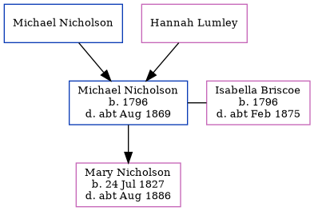

Michael Nicholson 1796 - c1869
[ Home ] | [ Calendar ] | [ Surnames Index ] | [ Errors ] | [ Family History ]A grocer and the child of Michael Nicholson and Hannah Lumley, Michael Nicholson was born in South Shields, Tyne and Wear, England in 17961,2,3,4, was baptised there at Barrington Street Baptist Church on 9 Mar 1796 and had 1 child with Isabella Briscoe: Mary Ann.
He died in South Shields c. Aug 18693.
Parents
Children
- Mary Ann was born on 24 Jul 1827
Citations
- 1861 England, Wales & Scotland Census - Findmypast
- England & Wales Non-Conformist Births And Baptisms - Findmypast
- England & Wales deaths 1837-2007 - Findmypast
- England Births & Baptisms 1538-1975 - Findmypast
Media
1861 England, Wales & Scotland Census - GBC/1861/0019368672
England & Wales Non-conformist births and baptisms - TNA/RG4/BAP/475142
England Births & Baptisms 1538-1975 - R_948884072
England & Wales deaths 1837-2007 - BMD/D/1869/3/AZ/000224/352
Family Tree
Map
Generated by ged2site. Last updated on Jul 3, 2024
Known Issues
Date of baptism (9 Mar 1796) before date of birth (1796)
Can't find relationship with the home person
The census for the year 1861 has been cited, but its information has not been used as a residence